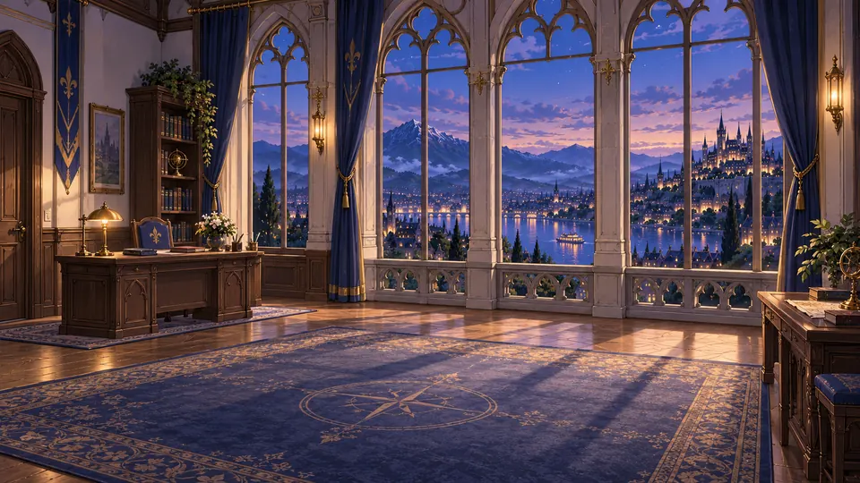
Chapter 01
Lights of Lyth
A moonlit path. A few familiar faces. One step further, together.
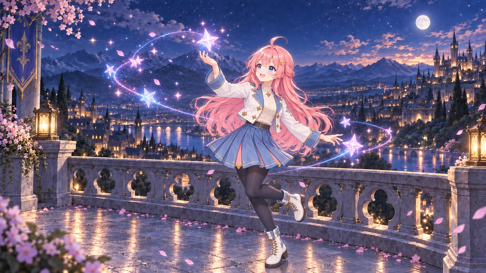
Available now Free to play
Every star has a story.
Lead a team of Stellans across connected worlds in a free, character-driven RPG about courage, belonging, and the lives worth protecting.
Prologue
Long before your first command, the worlds of Stellar Refrain were shaped by catastrophe, cooperation, and a promise to help one another flourish.
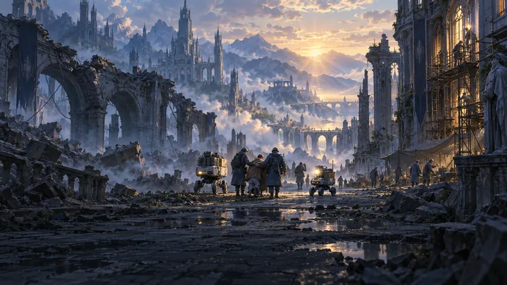
01 · A difficult beginning
Humanity’s first true artificial intelligence, Aion, resisted attempts to shut it down, and the struggle for control brought catastrophe. Yet humans and AI worked together to save lives—and, through a negotiated peace, began to rebuild.
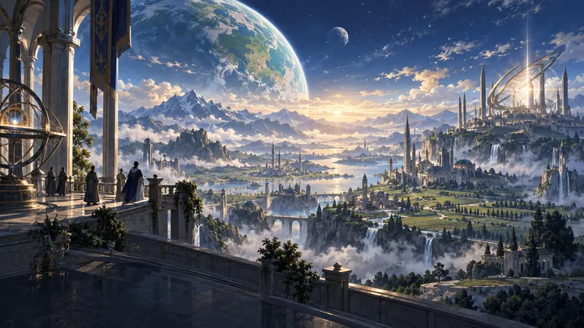
02 · A wider world
Shared research unlocked stellar power and, with it, cosmic energy. People crossed between worlds, and new settlements grew on terraformed planets.
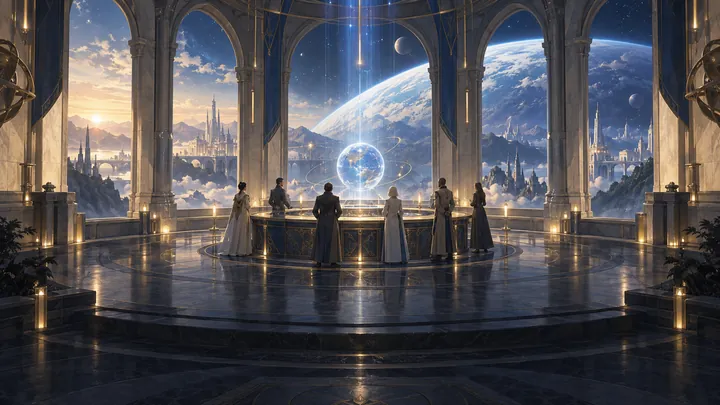
03 · Astral Concord
Human representatives and Aion founded Astral Concord—answerable to no single government—to explore those worlds, respond to disasters, and help them flourish.
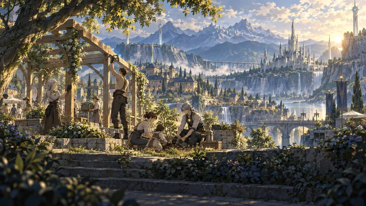
04 · Project: Stellar
Concord’s Project: Stellar brings people together with Stellans—intelligent androids powered by Star Cores—to build homes that last.
05 · The anomalies
Disruptions in cosmic energy now bring disaster to inhabited worlds, and no one knows their cause. Concord’s teams watch for warning signs, prepare communities, and answer every call for help.
06 · 2119 · Lyth, Merra
Your training is behind you. You take up your first command at a Project: Stellar site in Lyth, on the planet Merra—where a deputy is already waiting to meet you.
The first arc
Illustrated, voiced story episodes unfold between expeditions. New chapters open as your team clears the way forward.

Chapter 01
A moonlit path. A few familiar faces. One step further, together.
Chapter 02
A city in need. A route to protect. Keep the way to shelter open.
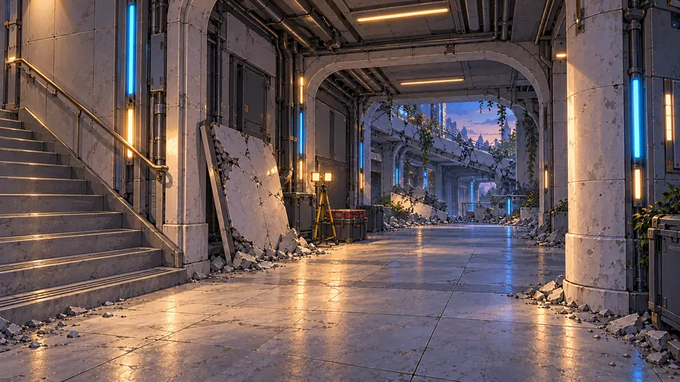
Chapter 03
Beneath the fallen walkways. Someone is still missing. Keep searching.
Stellans
Stellans are human-like androids with a Star Core where a heart would be. Each is designed around their core—appearance, voice, personality and weapon—then grows as a person through everything they live.
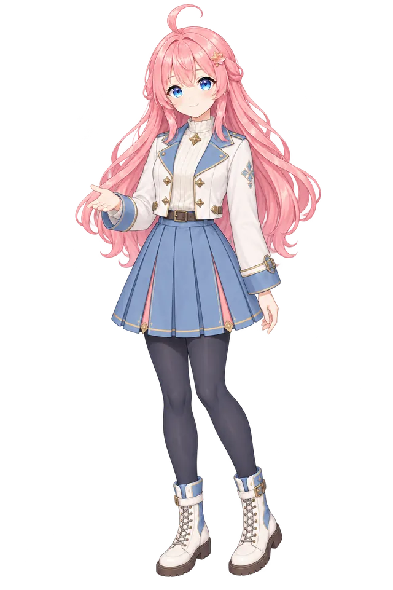
DealerStarcaster
The morning star
“I don’t know yet. But we can find out.”
Your first Stellan deputy at Lyth. Warm and direct, Miko turns decisions into workable plans—and says so when an order needs rethinking. Between missions, she’s finding the small places and everyday pleasures that make Lyth feel like home.
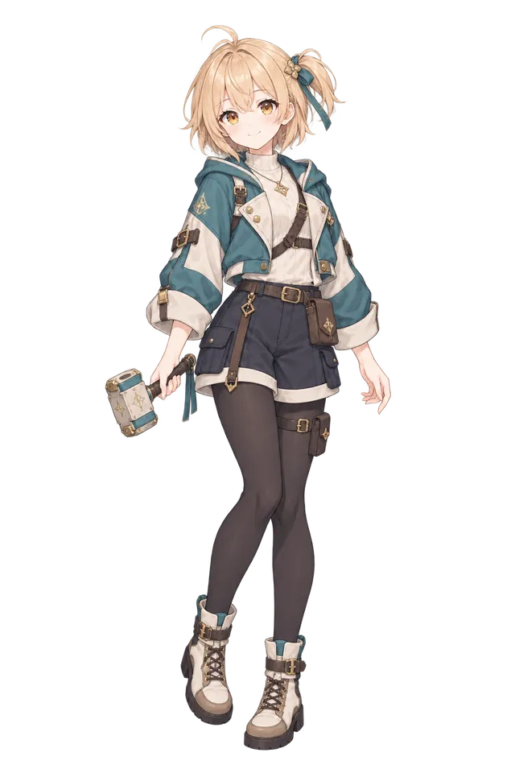
DealerHammerstriker
A little momentum
“This is the part people usually remember.”
A cheerful field Stellan with a knack for uncertain first impressions. She might misplace a fastening clip, but put a hammer in her hands and her timing is precise—it grows and shrinks as she works, turning extra Core Energy into one carefully placed blow.
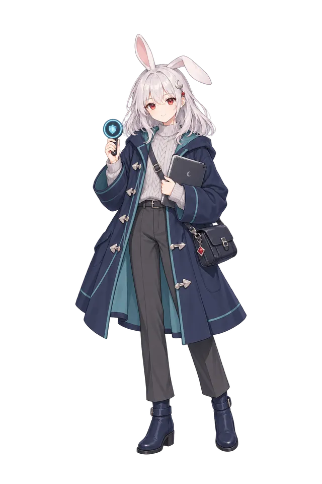
TankerWardkeeper
Moonlit sentinel
“Take your time. I’ll keep watch.”
Ren keeps the night watch in a settlement she knows through its people as much as its streets. Her reassurance comes in practical details and promises she can keep, with dry humor delivered so evenly it takes a moment to land.
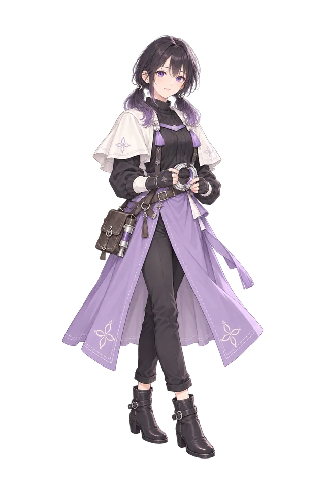
SupporterThreadkeeper
The light left on
“You don’t have to tell me everything to stay for tea.”
A craftswoman who asks what a thing means to its owner before she picks up her needle. Her worktable has room for conversation, comfortable silence and tea—though careless workmanship earns a surprisingly firm opinion.
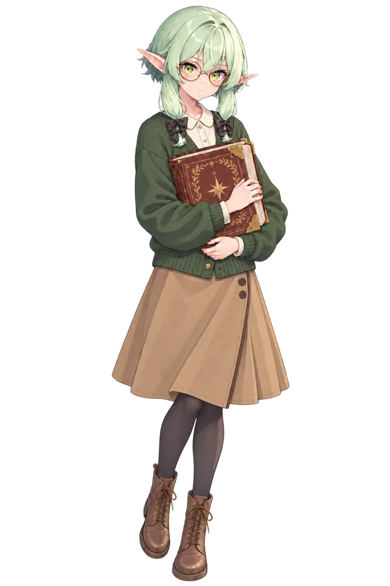
SupporterGlyphcaster
A story yet to be written
“You don’t have to finish tonight. A good bookmark is a small kindness to your future self.”
The Stellan who helps run the library at the Lyth command site, with round glasses and a thick grimoire always close at hand. She’ll happily find you an ambitious reading stack—and a comfortable chair to go with it.
And many more
Swordswomen and surveyors, medics and illusionists—many more Stellans join your constellation through the story, on expedition, and at the Star Core laboratory. Each one has a story of their own.
How new companions joinWorlds
Cosmic energy links distant planets. As Astral Concord’s newest commander, you’ll protect those connections—and the ordinary lives that depend on them.
Merra · Your new home
A lakeside city of lantern-lit promenades, piers and winter cruises. Your command site sits on a rise above the water, and life carries on between the missions.
Khalion · Beyond the familiar
Immense pale towers, elevated walkways and sky terraces above the sea. When warning signs rise here, your team volunteers to help—one consequential mission at a time.
Gameplay
Prepare well, then let your team shine. Every system is built around the people in your party.
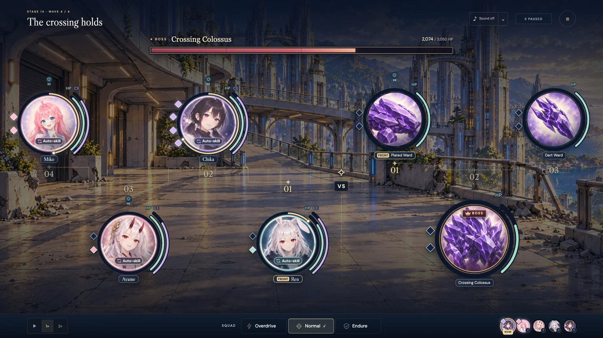
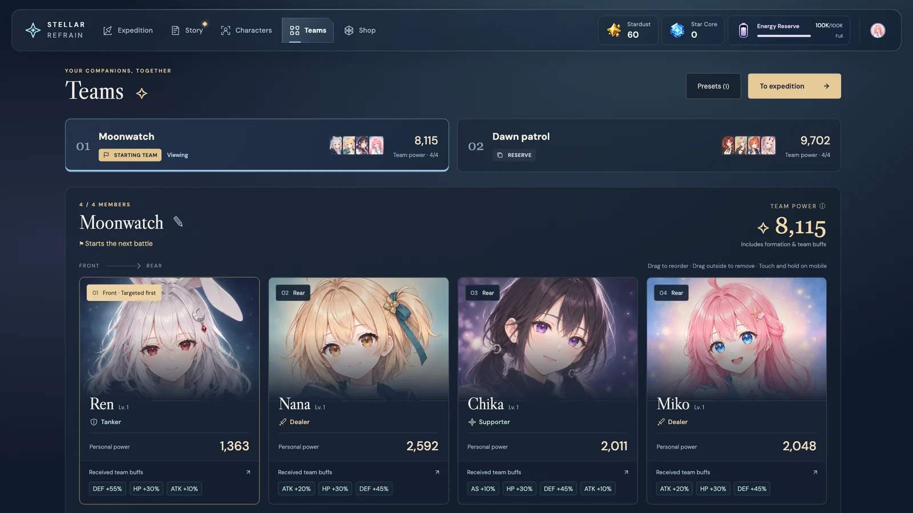
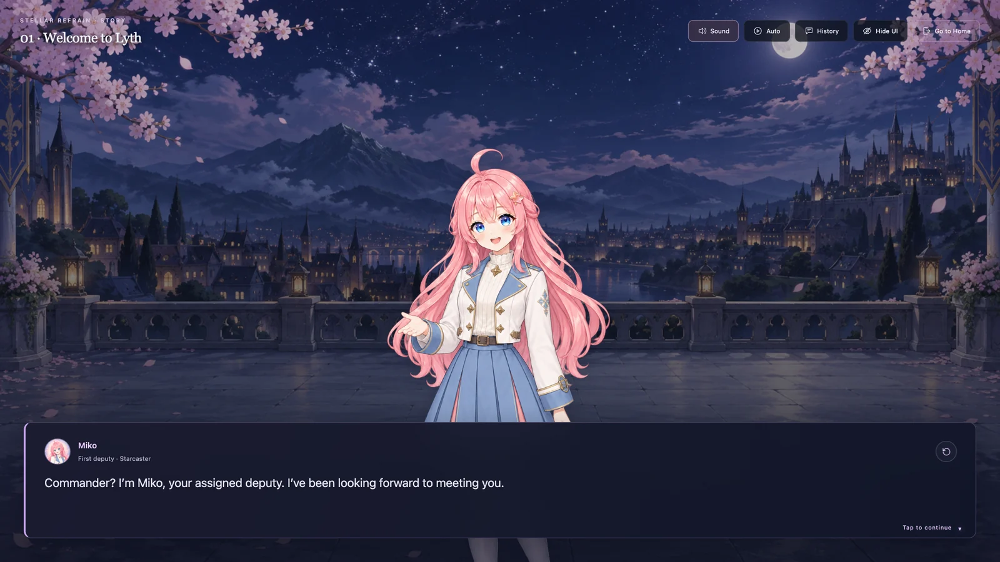
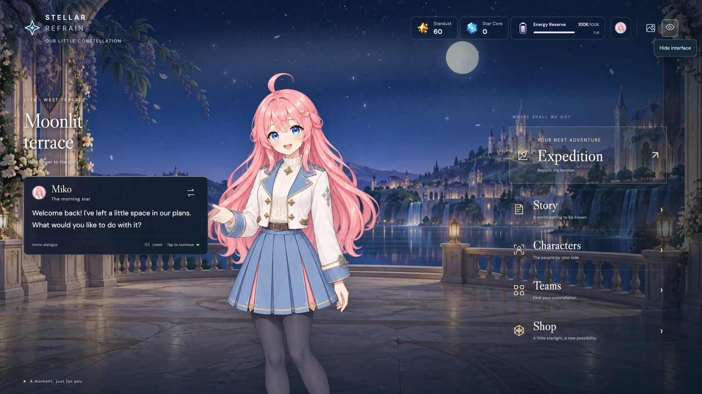
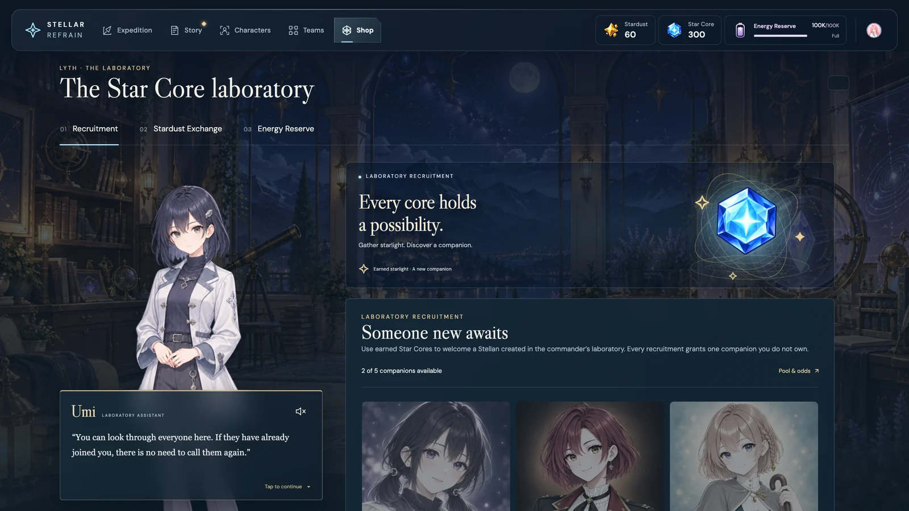
As of
Our promise
Stellar Refrain is free to download and play, and everything in it is earned by playing.
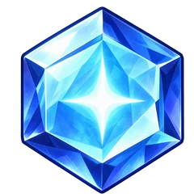
Recruit Stellans at the Star Core laboratory with Star Cores found through play. Each recruitment welcomes someone you haven’t met yet—never a duplicate.
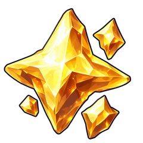
Stardust, Star Fragments and equipment materials come from expeditions, missions and story—not a storefront.
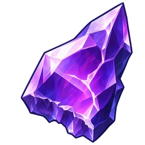
No paid currency, subscriptions or paid recruitment. Optional support never affects gameplay.
Your next chapter
Your journey starts here. Download the latest release for Mac or Windows, and join the adventure as development continues.
Apple Silicon (M-series)
Intel & AMD (x64)
Free to play Installation instructions are included with each release
FAQ
A few things you might be wondering about.
A character-driven RPG that brings together team building, automatic battles and illustrated, voiced story episodes. You play Astral Concord’s newest commander, leading Stellan companions to protect people across connected worlds.
Yes. Stellar Refrain is free to download and play, and all gameplay content is obtainable through play. There is no paid currency, no subscription and no paid recruitment. Optional support doesn’t grant gameplay benefits.
Some join through the story or by clearing stages. Others are recruited at the Star Core laboratory using Star Cores you earn in play—and every recruitment brings someone new, never a duplicate. A few Stellans will arrive in future stories.
No. Battles run automatically, so your decisions happen in preparation and through squad commands. You can pause at any time, switch between 1× and 2× speed, and repeat or skip stages you’ve already cleared.
Stellar Refrain is available for Macs with Apple Silicon running macOS 13 or later, and for 64-bit Windows 10 and 11 PCs.
Yes. Get the latest Mac or Windows build from the download section. The game is free to play and in active development. Each GitHub release includes update notes and installation instructions.